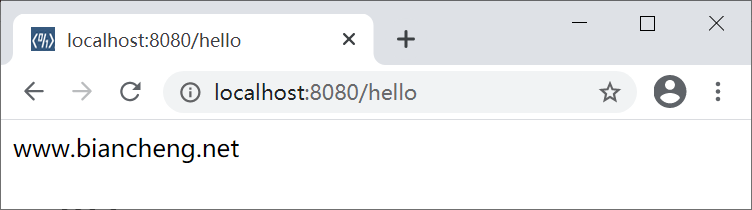

spring-boot-starter-web（Web启动器）
Spring MVC 是 Spring 提供的一个基于 MVC 设计模式的轻量级 Web 开发框架，其本身就是 Spring 框架的一部分，可以与 Spring 无缝集成，性能方面具有先天的优越性，是当今业界最主流的 Web 开发框架之一。
Spring Boot 是在 Spring 的基础上创建一款开源框架，它提供了 spring-boot-starter-web（Web 场景启动器） 来为 Web 开发予以支持。spring-boot-starter-web 为我们提供了嵌入的 Servlet 容器以及 SpringMVC 的依赖，并为 Spring MVC 提供了大量自动配置，可以适用于大多数 Web 开发场景。
只要我们在 Spring Boot 项目中的 pom.xml 中引入了 spring-boot-starter-web ，即使不进行任何配置，也可以直接使用 Spring MVC 进行 Web 开发。
2. 在 net.biancheng.www 包下创建一个名为 HelloController，代码如下。
3. 启动 Spring Boot，浏览器访问“http://localhost:8080/hello”，结果如下图。
Spring Boot 是在 Spring 的基础上创建一款开源框架，它提供了 spring-boot-starter-web（Web 场景启动器） 来为 Web 开发予以支持。spring-boot-starter-web 为我们提供了嵌入的 Servlet 容器以及 SpringMVC 的依赖，并为 Spring MVC 提供了大量自动配置，可以适用于大多数 Web 开发场景。
Spring Boot Web 快速开发
Spring Boot 为 Spring MVC 提供了自动配置，并在 Spring MVC 默认功能的基础上添加了以下特性：
- 引入了 ContentNegotiatingViewResolver 和 BeanNameViewResolver（视图解析器）
- 对包括 WebJars 在内的静态资源的支持
- 自动注册 Converter、GenericConverter 和 Formatter （转换器和格式化器）
- 对 HttpMessageConverters 的支持（Spring MVC 中用于转换 HTTP 请求和响应的消息转换器）
- 自动注册 MessageCodesResolver（用于定义错误代码生成规则）
- 支持对静态首页（index.html）的访问
- 自动使用 ConfigurableWebBindingInitializer
只要我们在 Spring Boot 项目中的 pom.xml 中引入了 spring-boot-starter-web ，即使不进行任何配置，也可以直接使用 Spring MVC 进行 Web 开发。
示例
1. 创建一个名为 spring-boot-springmvc-demo1 的 Spring Boot 工程，并在其 pom.xml 的dependencies 节点中添加 spring-boot-starter-web 的依赖，代码如下。
<dependency>
<groupId>org.springframework.boot</groupId>
<artifactId>spring-boot-starter-web</artifactId>
</dependency>
2. 在 net.biancheng.www 包下创建一个名为 HelloController，代码如下。
package net.biancheng.www.controller;
import org.springframework.stereotype.Controller;
import org.springframework.web.bind.annotation.RequestMapping;
import org.springframework.web.bind.annotation.ResponseBody;
@Controller
public class HelloController {
@ResponseBody
@RequestMapping("/hello")
public String hello() {
return "www.biancheng.net";
}
}
3. 启动 Spring Boot，浏览器访问“http://localhost:8080/hello”，结果如下图。

图1：访问 HelloController 结果
图1：访问 HelloController 结果
注意：由于 spring-boot-starter-web 默认替我们引入了核心启动器 spring-boot-starter，因此，当 Spring Boot 项目中的 pom.xml 引入了 spring-boot-starter-web 的依赖后，就无须在引入 spring-boot-starter 核心启动器的依赖了。
关注公众号「站长严长生」，在手机上阅读所有教程，随时随地都能学习。内含一款搜索神器，免费下载全网书籍和视频。

微信扫码关注公众号